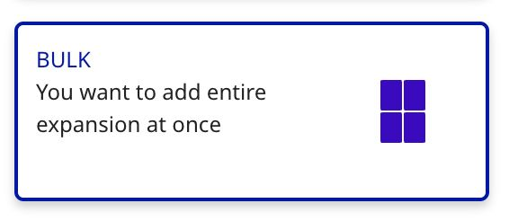

Getting started
How to add cards to your inventory
There are four ways to add cards to PowerTools. This guide walks you through each one, so you can pick what fits your situation.
In this guide
Pick the right mode
From your dashboard, click Add new articles. You'll see four ways to add cards — pick the one that matches what you have in front of you.
| If you have… | Use |
|---|---|
| A handful of unsorted singles | Single Card Mode |
| A sorted pile from one expansion | By Expansion |
| A full or near-full expansion | Bulk |
| Your inventory already in a CSV or Excel file | Import a File |
Before you start: articles vs. copies
PowerTools treats identical cards as one article. An article has a single sell price and one public comment that's shown on supported platforms.
Two cards belong to the same article only if every attribute matches — name, expansion, condition, language, finish, and signed status. Change any one of those, and you get a separate article with its own price and comment.
If you currently use public comments to distinguish copies of the same card (for warehouse location, batch, etc.), use the dedicated Location field in PowerTools instead. Location is private and supports per-copy tracking.
Single Card Mode
Use this when: you have one or more unsorted singles.

- From the Add Singles screen, click Single Card Mode.
- Start typing the card name in the Card Name field. PowerTools shows matching cards as visual tiles.
- Use the arrow keys to pick the right printing, then press Enter to stage it.
- Use the hotkeys to set condition, language, and finish without leaving the keyboard. Press Tab to move between the Quantity and Comment fields.
- Press Enter or Space to confirm. Press C to stage another copy with the same settings.
- When you're done with the batch, click Save at the top of the screen.
Hotkey reference
Once a card is staged, an overlay shows the available hotkeys:
| Action | Keys |
|---|---|
| Condition | Q MT · W NM · E EX · R GD · T LP · Y PL · U PO |
| Language | A EN · S ES · D DE · F FR · G IT · H RU · J JP · K KR · L PT · M TW · N CN |
| Foil | I |
| Create & copy | C |
| Confirm | Enter or Space |
| Cancel | Esc |
| Switch field | Tab (Quantity ↔ Comment) |
By Expansion
Use this when: you have a sorted pile from a single set and want to go down it in order.

- From the Add Singles screen, click By Expansion.
- Pick a sort order under Sort expansion by — by rarity and collector number, by collector number, by English name, or by rarity and English name. This sets the order you'll move through the cards.
- Pick the set under Expansion.
- PowerTools shows the first card. Set the quantity, condition, language, and any other attributes — use the hotkeys for speed, and press Tab to move between the Quantity and Comment fields.
- Press Space (or Enter) to confirm and advance to the next card.
- To jump directly to a specific card, use the collector-number dropdown at the top of the panel.
- Click Save when you're done.
Bulk
Use this when: you've got a full or near-full set and want one (or N) of every card as a starting baseline.

- From the Add Singles screen, click Bulk.
- Pick the set under Expansion. PowerTools shows the rarity breakdown: total cards, plus counts per category (Common, Uncommon, Rare, Mythic, etc.).
- Enter how many of each rarity you have. For example, entering
1in Common, Uncommon, and Rare adds one of every common, uncommon, and rare in the set. - Set the defaults (condition, language, finish, location, comment) — they'll apply to every card in the batch.
- Click Add X articles. The workspace populates with the full batch as individual article cards, which you can then edit or delete one by one.
- Click Save when you're done.
Import a File
Use this when: your inventory already lives in a CSV or Excel file (for example, an export from Cardmarket).

- From the Add Singles screen, click Import a File.
- Click Get example CSV file (PowerTools format) in the top-right to download the template.
- Fill in the template with your inventory. See the column reference below.
- Drag your file into the drop zone, or click to browse.
- PowerTools imports the file and stages every row as an article in the workspace.
- Review the staged articles, then click Save to push them to your channels.
CSV column reference
| Column | What goes in it |
|---|---|
cardmarketId | The Cardmarket product ID. |
quantity | Number of copies. |
name | Card name. |
set | Expansion name (e.g. Gatecrash). |
condition | Condition code: MT, NM, EX, GD, LP, PL, PO. |
language | Language (e.g. English). |
isSigned | TRUE or FALSE. |
price | Sell price (whole number). |
comment | Public comment (optional). |
finishType | Regular, Foil, etc. |
Duplicate rows: If your CSV has multiple rows for identical cards (all attributes match), PowerTools combines them into one article. Quantities stack, and the last price and comment in reading order win.